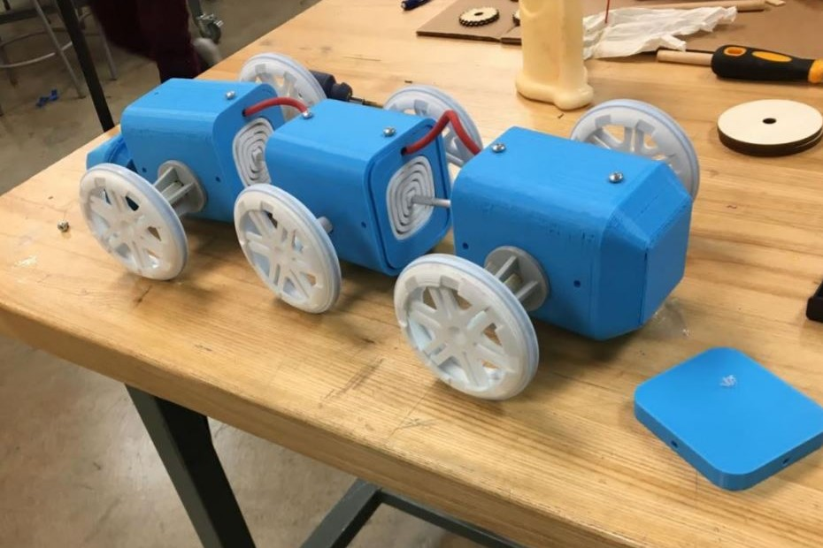
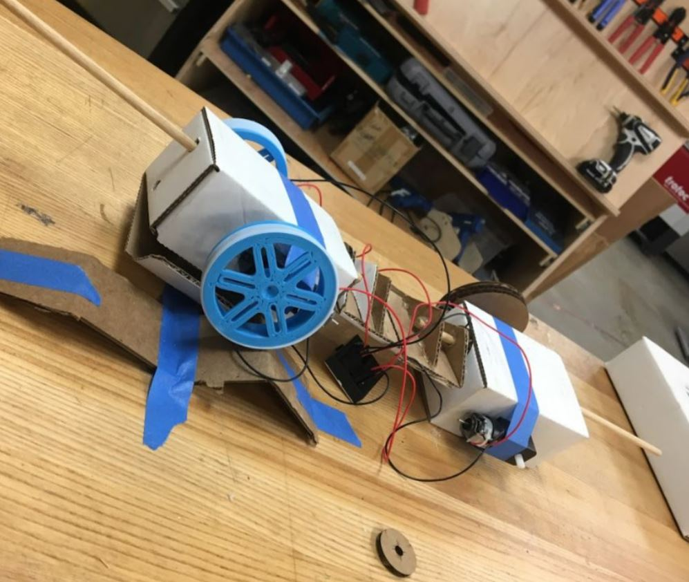
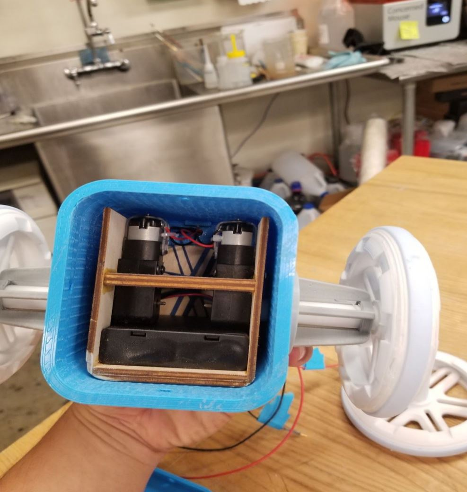

Moon Rover.
After we completed several prototypes, the issues we had to overcome became very apparent. The joints, which we made by modifying this thingiverse model, needed to have a little bit of rigidity and our body pieces also need a lower center of mass underneath the axle of each body's set of wheels. We 3d printed the body pieces end pieces to fit the multidirectional joints. Our end caps took on several iterations. We first had a square socket for the joints. Our original plan was to screw in the joints to make it fit. After that didn’t work, we changed our end caps to have sockets that were the exact size and shape of our joints.
By doing this, we had a press fit socket for our joint. With a little CA glue, we were able to fit our joints in just right. Additionally, these press fit end caps had pegs around the frame that would allow us to add a series of self-centering rubber bands to the back of the end plate. We added wooden plates and rubber bands to the backs of the omnidirectional joints to allow for our car to self center. This allowed our vehicle to move in any direction while adding a force to move it back to its centered position.
We also built plywood braces to hold 4 DC 5-6 volt motors in place above the batteries giving us a lower center of mass. The center body was also a challenge to design we needed to design it in such a way that it had two free floating wheels and also had enough space to accommodate the feather and the power board to power the motor shield. We used laser cut pieces to hold our bearings to the center. We then fastened a specialized nut and bolt holding tight to each bearing so the center wheels could protrude from either side.
We then ran the motor wires and battery wires form both outer bodies through a hole in the tops of the jointed plates red. We sealed them in red surgical tubing cut to span the gap between the body pieces. Then, we soldered a perfboard to consolidate the battery packs and leads out of the perfboard to the power terminals of the motor shield. After accomplishing all of this we tried out what we thought would be our final iteration.
The DC motors clearly didn’t have enough torque to propel our robot. So we transitioned to geared servo motors that had to be converted to gear box motors by removing the servo board and the stopping peg in the servo. We then soldered leads directly to the inner dc motor of the servo. What this allows is the gear ratios of the servo to provide much more torque with much less power. At this point our 3d printed body pieces were designed for the size of the dc motors which were much smaller than the servo motors.
We had to take a lot of time to redesign the plywood motor mounts to allow the servo motors to be place one at a time. We ended up designing a kind of box with a slot separating the two end faces of the servo. This held the motors in place while also lifting the battery up a few millimeters. With this brace, we were able to assemble to car as we went, so we had much fewer issues aligning the axels to the holes in the body. The mounts were basically press fit to the body of the car, but just to be safe, we made some makeshift filets with hot glue. Then, at this point, the new plywood servo mounts also interfered with the mobility of the omnidirectional joints. So we place them with glue and then used a dremel to lower the contact between the motor mount and the joints.
Our final problem to solve was adapting the ends of our wheels’ axles to fit the motor head of the servos. Because the pieces were so small, it was hard to design strong, yet accurately fitting shapes that would convert our DC built axel attachments to servo attachments. In the end, after several iterations of 3D printed adapters, Adam, our GSI helped us laser cut multi layered adapter out of plywood. Finally, our car was able to move with the force and directionality we initially envisioned.
Going into this project, we wanted to make a vehicle that was fast and had a high degree of maneuverability. This took many iterations to achieve, but we were eventually able to reach our initial goals. Towards the end, having to change our DC motors for modified servos threw us for a loop, but it was worth it because our car really needed that extra torque that the servos provided. Overall, the additions we made that we hadn’t planned for – different types of motors, a newly designed brace, adjusted end caps for our joints – strengthened our final product.